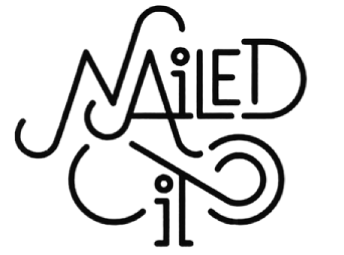
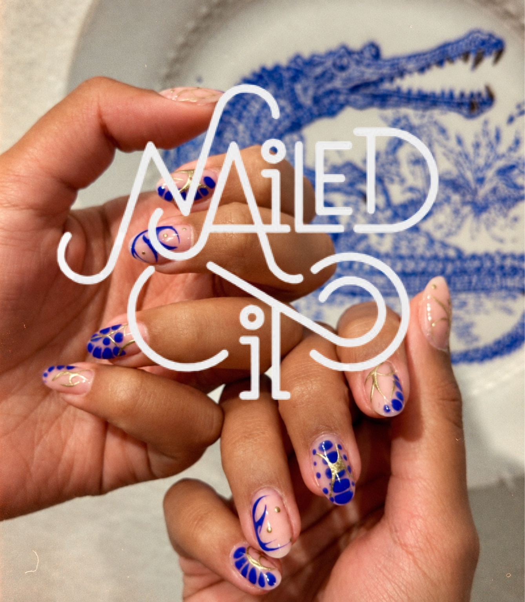
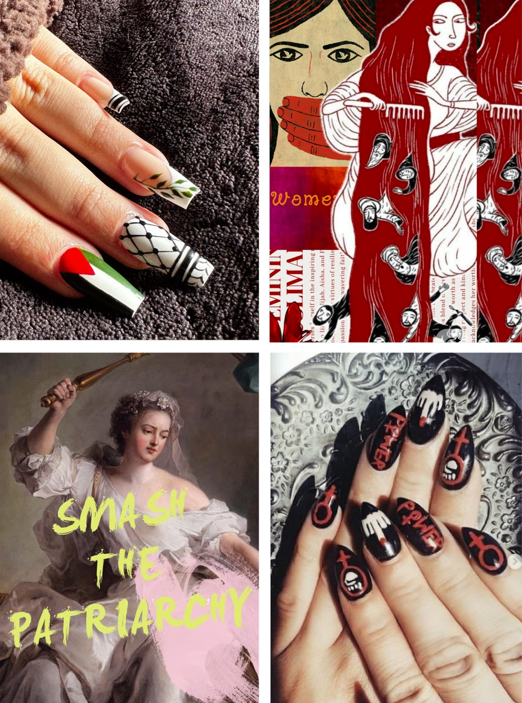
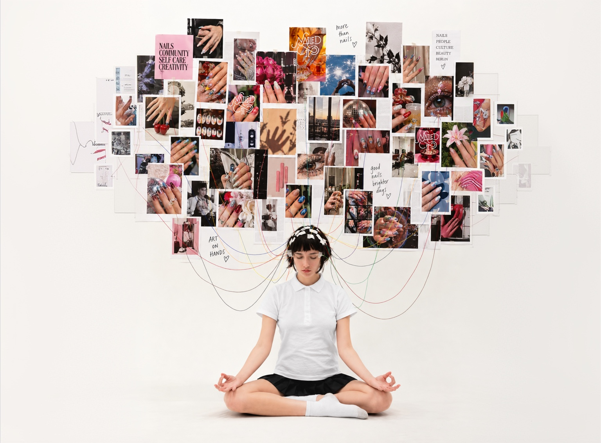
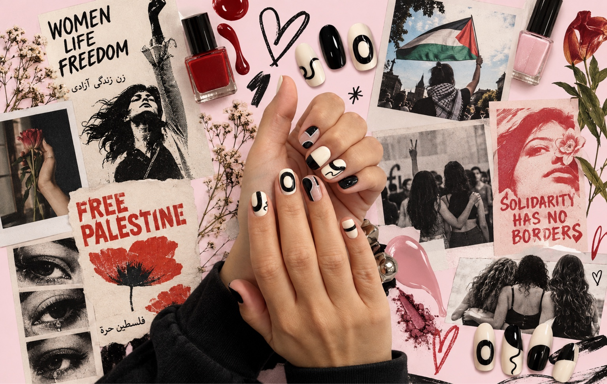
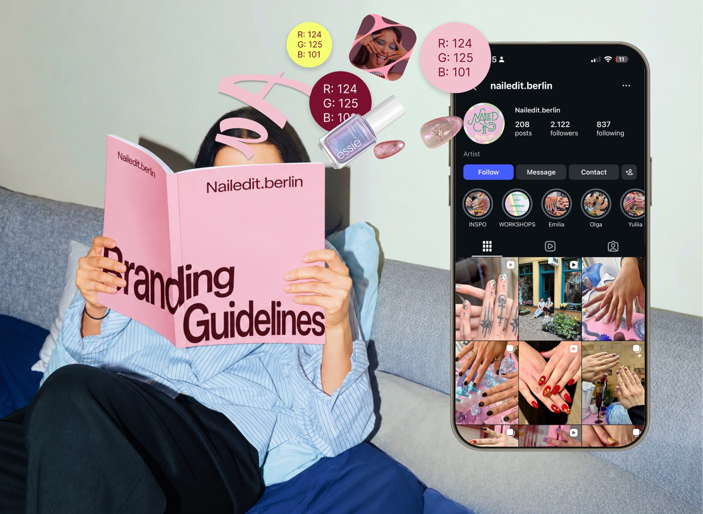
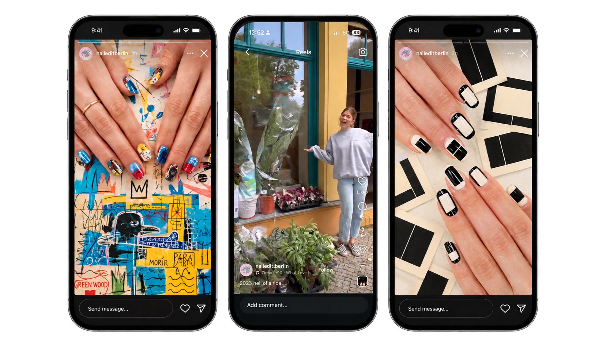
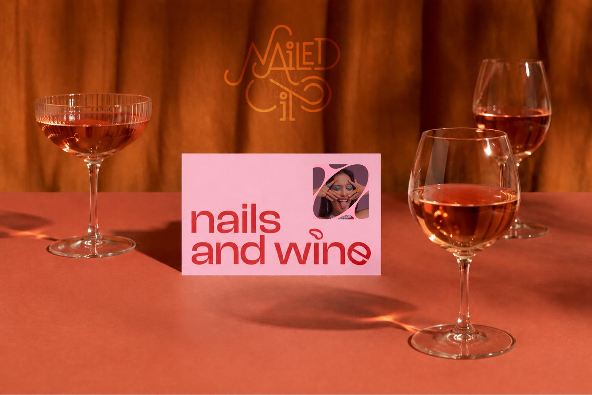
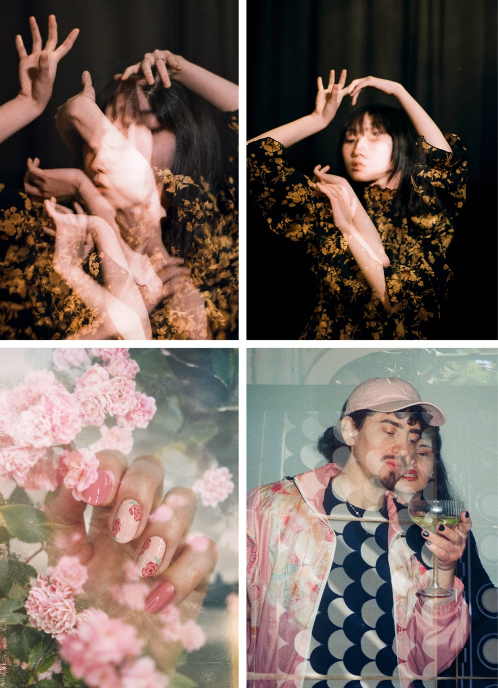

GOALS
What should social media do for Nailedit.Berlin?

BRIEF OFFER / 2026
A proposal for developing Nailedit.Berlin’s social media direction, visual language and content across Instagram and TikTok.

From what I understood, Nailedit.Berlin is about great nail work, but also about the world around it.
01People and community are important.
02Art, music and culture are part of Nailedit.Berlin’s world.
03Nailedit.Berlin has a strong social and political point of view and wants to contribute to these conversations.
04There is an interest in creating more connections and collaborations.
05Nailedit.Berlin has a voice and is not afraid to use it.

THE FOUNDATION
Before creating the content, we start with a 1 to 2 hour workshop together.
WE USE THIS TIME TO DEFINE
What should social media do for Nailedit.Berlin?
Who comes to Nailedit.Berlin now, and who do we want to reach?
How should Nailedit.Berlin speak online?
What do we talk about? What do we show? How often?
How do the two platforms work together without creating everything twice?
How do the nail work, people, culture, community, politics and collaborations come together?

Based on the workshop, I will put everything into a focused social media strategy that we can use as the base for the content.
STARTING POINTS / OPEN FOR DISCUSSION
Based on the conversation we had in our meeting, there are a couple of ideas that I think would be interesting to explore together as part of the strategy.
QUESTION 01 /
Could social media give people a reason to stay connected with Nailedit.Berlin even when they’re not currently looking for a manicure?

QUESTION 02 /
Could we show more of what exists behind and around the finished nail design?
These are starting points to explore together, rather than defined directions.

Based on the strategy + all the guidance from the new branding, we define how Nailedit.Berlin should look and feel across social media platforms. Social media becomes an extension of the branding.
THIS CAN INCLUDE
Templates can be created in Figma, or we can explore other tools that feel comfortable for you.
This is where the templates and visual direction become real content.

For Instagram, we can also work with a 9-post grid preview, so we can see how the content works together before publishing.
POSSIBILITIES TO EXPLORE
Another direction we could explore is creating small events that bring people together around Nailedit.Berlin and help build a community naturally.

A small get-together around nails, people and conversation.
A get-together where we create nails, portraits and photography together.
Artists, musicians, photographers, DJs, designers or other creatives.
Bringing Nailedit.Berlin into other communities and spaces.
These events could create connections, community and content at the same time.
A DIRECTION TO EXPLORE
One direction I would like to propose is exploring film photography alongside digital photography.
Film can bring a more human, tactile and spontaneous feeling to the images. It brings people and materiality back into the photography, and could help Nailedit.Berlin develop a more distinctive visual presence in a space where a lot of nail content can start to look very similar.
DOUBLE EXPOSURE
One technique I’ve started exploring myself is double exposure, where two images are layered together in-camera.

01 / NAILS + INSPIRATION
We could use this in different ways. For example, we could combine nails with the textures, materials or references that inspired them, creating an image where the nail design and its inspiration overlap.
02 / PERSON + MOVEMENT
Or we could use movement or multiple exposures of the person wearing the nails, showing them enjoying their new nails in their own unique way.
I’ve already started experimenting with this approach through my own photography, and I would be very happy to explore how it could translate into the world of Nailedit.Berlin.
NOT THE WHOLE FEED
This doesn’t mean the whole feed needs to look like this. Clear digital photography will still be important for showing the nail work and its details.
Film photography could become one recurring visual direction, especially for portraits, collaborations, events and more spontaneous moments around Nailedit.Berlin.
WHEN THE SPACE OPENS
The content can start now and grow naturally when the studio opens.
The studio will give us more to work with:
We can also document the process of creating the studio, if that feels right.
Define the direction together.
Create the look for social media.
Posts, video, photography and stories.
See what works and develop from there.
THREE WAYS TO WORK TOGETHER
Flexible / one-off
€25 / hour
For flexible or one-off work.
This is usually my preferred way of working, as it gives us flexibility if the scope changes along the way. Instead of having to redefine the package every time we add, remove or adjust something, I simply track the actual time spent on the project.
I use TopTracker to track my working hours. You will have access to the time tracking, including activity and periodic screenshots, so you can clearly see how much time was spent and what I was working on.
Choose the elements you need
1 to 2h workshop + customer segmentation, goals, brand voice, content direction, Instagram + TikTok approach and the wider Nailedit.Berlin world.
approx. €200
10 static or carousel posts based on the strategy and branding.
1 carousel = 1 post.
€250
Usually 2 to 3 hours: €50 to €75
If we decide to work with 35mm film photography, additional material costs apply:
35mm film · approx. €6 to €10 / roll
Development + scanning · approx. €15 / roll
Up to 36 images per roll
Total additional film cost: approx. €21 to €25 per roll, on top of the photography hours.
€25 / hour
The final price depends on the complexity of the video.
This can include:
Concept / storyboard · Filming · Editing · Voice-over · Text / graphics · Reusable video templates
from €25 / video
Consistent monthly support
€600 / month
Approx. 24 hours per month
Ongoing support across whatever is needed that month: